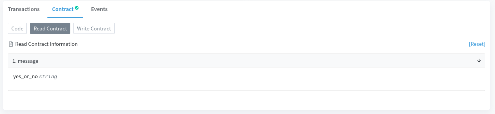
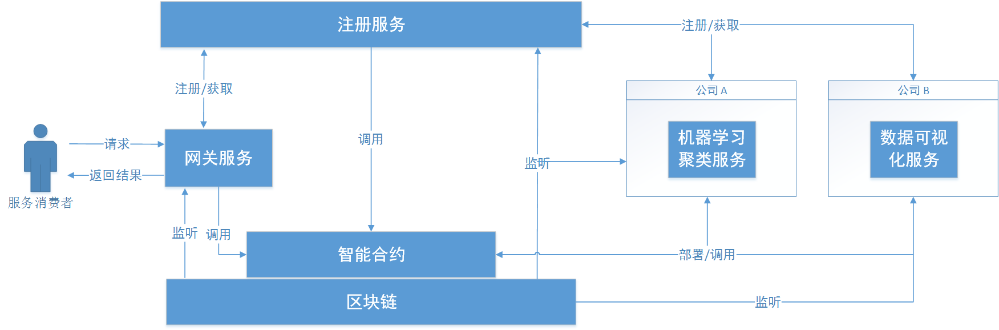

以太坊开发团队开发了 Remix IDE 和配套的 Remix 一系列插件供智能合约实验用。当然也可以使用 Java 的 web3j 来实现这些功能
Installation
1 | sudo pacman -Syu nvm solidity |
Later every time open it, type in terminal:1
2nvm use 8.0 # required if you installed several versions
remix-ide
Procedure
编写智能合约
编译智能合约

在左侧找到编译插件，如果没有则需要在插件管理处安装Compile插件。
注意编译插件的版本选择应和程序第一行的要求一致。
Deploy and run on localhost
Environment 选择 Js VM, 这是浏览器虚拟出来的区块链，刷新一遍后即清空
After choosing JS VM, you will have five available accounts in the next account list.
部署和调用store ABI的过程会消耗ether，但是调用retrieve ABI的过程不会消耗，即使过程中进行了运算。
一些语法点
一个函数设置成 view 之后，这个函数中不可修改合约变量的值，并且此功能不消耗eth。
为了使 Solidity 智能合约能够与其他程序交互，我们需要借助 web3.js
1 | npm install web3 |
部署到测试网络上，可以通过将钱包地址发到推特或者脸书上，然后把链接贴回网址获得一些测试币。

点开 Contract 对应的地址网址：
接下来 Verify & Publish Source code
verify and publish 成功
可以通过 read contract 读取合约中的public变量值：

使用 Prepros 软件或 VS Code Live Server 插件将文档部署在 localhost 的某个端口上（注意不能直接从本地用浏览器打开）
Java下的 web3j 实验

接着上一个实验，再安装 solidity, go-ethereum, 以及 web3j 的 3.6.0 版本(https://github.com/web3j/web3j/releases/tag/v3.6.0)
首先查看 版本号
根据版本号，编写一个指定了对应版本号的 Solidity 合约(当然，程序第一行也可以指定合约版本号范围，这样合约文件的适用性会更好，但是可能功能会有所局限在最早的版本。)1
2
3
4
5
6
7
8
9
10
11
12
13
14
15
16
17
18
19
20
21
22
23
24
25
26
27pragma solidity ^0.6.6;
contract StorageContract {
mapping(string => bool) public allTokens;
event logToken(string token);
event logCheck(bool result);
event compute_times(int256 times);
function sendToken(string memory token) public {
allTokens[token] = true;
emit logToken(token);
}
function checkToken(string memory token) public returns (bool result) {
if (allTokens[token] == true){
logCheck(true);
return true;
} else {
logCheck(false);
return false;
}
}
function computeTimes(int times) public {
emit compute_times(times);
}
}
编译合约：1
solc control.sol --bin --abi --optimize -o solidity
上个命令将编译后的abi文件和bytecode文件输出到子文件夹solidity/，如果该子文件夹中已存在同名文件，则需要添加 --overwrite
使用 web3j 打包成 Java 类：1
web3j solidity generate solidity/Control.bin solidity/Control.abi -o {directory/to/src/main/java} -p {com.your.packagename}
上面命令大括号中分别为要输出的Java主目录和要使用该类的包名，输出结果为 StorageContract.java。（也可以随意指定然后拷贝到需要的目录下，这种方法需要修改匹配包名）
启动以太坊区块链
启动方法有多种，这里推荐本地搭建geth private network的方式。因为除了geth，其他的一些以太坊区块链后端如 Infura, Ganache 等，对功能进行了阉割。导致无法进行监听等功能，所以建议还是老实用geth搭一条私链。
geth private network
1 | { |
1 | geth --datadir ./ init genesis.json |
进入geth console 的方式有两种，一种是启动geth后台之后，通过ipc方式进入：1
geth attach ipc:./geth.ipc console
另一种是直接在启动geth命令中加入console1
2
3
4
5
6
7
8geth
--datadir ./
--rpcapi personal,eth,net,web3,txpool,debug,miner,admin -rpc
--rpccorsdomain "chrome-extension://nkbihfbeogaeaoehlefnkodbefgpgknn"
--allow-insecure-unlock
--wsapi personal,eth,net,web3,txpool,debug,miner,admin --ws
console
2>> /tmp/eth01.log
上面命令参数一行行解释
1： 启动 geth 客户端
2： 指定私链存放的数据文件夹（之前已 geth init genesis.json --datadir ./）
3： enable rpc接口，并指定开放的rpcapi
4： 默认只支持https访问，这里开放 metamask 插件的http跨域访问
5： 允许在 console 中和 http 请求中解锁 account
6： enable websocket接口，并指定开放的 wsapi
7： 开放控制台
8： 将一些不必要的log输出重定向（控制台会比较干净，不会被log输出干扰）
下面1行方便复制粘贴1
geth --datadir ./ --rpcapi personal,eth,net,web3,txpool,debug,miner,admin -rpc -rpccorsdomain "*" --allow-insecure-unlock --wsapi personal,eth,net,web3,txpool,debug,miner,admin --ws console 2>> /tmp/eth01.log
metamask 里面custom rpc
remix ide 里面 injected web3
geth 里面的 keystore 不好获得私钥，所以在进行web3实验的时候用 Admin 或者 Wallet.Utils
geth rinkeby test node
1 | $ geth --rpcapi personal,db,eth,net,web3 --rpc --rinkeby |
这个客户端默认工作在 localhost:8545
Infura remote test node
注册使用 Infura 创建一个在线节点：
部署智能合约
将编译过的合约部署到区块链节点上，这里可以通过 Remix IDE, web3.js, web3j 等多种方式部署。
Remix IDE 部署
geth节点开启挖矿模式
如果使用Remix IDE的 Provided Web3格式，则不需要导入 metamask 钱包
点击Deploy
跳出Confirm Transaction窗口
生成合约打包的交易形式：1
2
3
4
5
6
7
8
9
10
11
12
13
14
15
16{
blockHash: "0x164a207f528d564fa5bf3e265dc7886ef927e96d19556302476ef9f80569caf5",
blockNumber: 8343,
from: "0xcbcb8167b1f2de05d696f041bb6c5f2e127baec5",
gas: 368951,
gasPrice: 4000000000,
hash: "0x9de4e3a...96990f0c",
input: "0x6080604052348015610010576...",
nonce: 2,
r: "0x6d215cdb66e10cf415795b3552cf2acc58129950b53a4ba1111788b4f2504090",
s: "0x4f29c1e7332a7945f6e10de69a09e0db89a9df51d1e24b901f0d411f77c38f89",
to: null,
transactionIndex: 0,
v: "0x26",
value: 0
}
等待一会，会提示交易打包成功，成功后可以在 Remix 控制台看到输出的结果，以及左栏会多出部署好的合约接口。
Java调用合约ABI程序
Solidity 中引入了 event 机制用于监听，但要注意 event 无法直接从客户端调用，需要通过调用 ABI 函数，函数里面 emit 一个event这样才行。
添加 pom.xml 依赖：1
2
3
4
5<dependency>
<groupId>org.web3j</groupId>
<artifactId>core</artifactId>
<version>3.6.0</version>
</dependency>
1 | TransactionReceipt receipt = contract.ABImethod(args).send(); |
在 Remix 控制台中显示一个带有event log输出的交易形式：
原始的交易格式1
2
3
4
5
6
7
8
9
10
11
12
13
14
15
16{
blockHash: "0x5325ddcd2d4637639a947a04c71fe558bd4846b63e70b888c669fd6cb5948cea",
blockNumber: 8346,
from: "0xcbcb8167b1f2de05d696f041bb6c5f2e127baec5",
gas: 45120,
gasPrice: 20000000000,
hash: "0x2d62aa...31f2ee",
input: "0x5ed39f42...",
nonce: 3,
r: "0x85e7d979303becce39df32e0cc835aa24f7fadbd9f19016aa941bdbffcd5426f",
s: "0x47bd134df93e5e35295fb7a67574c1ef3e31b86fbacc4cf2bd411e7c30cf9ce3",
to: "0xdb71c8c71361d5d0b592438333a41baf6c73ead7",
transactionIndex: 0,
v: "0x25",
value: 0
}
web3j 中打印出的 event log 形式：
会发现 Remix 的输出格式进行了优化，而 web3j 中则是原汁原味的以太坊交易的显示。优化的方法也比较简单，通过查看源代码，发现remix里调用event时进行了记录，在显示log的时候嵌入到里面了。
GitHub remix/remix-lib/src/execution/eventsDecoder.js
Java端监听合约log程序
在监听程序中监听 log event
Subscriber.java1
2
3
4
5
6
7
8
9
10
11
12
13
14
15
16
17
18
19
20
21import rx.Subscription;
public class Subscriber {
private static Web3j web3;
private String CONTRACT_ADDRESS;
Subscriber(Web3j web3j, String contract_address) {
web3 = web3j;
CONTRACT_ADDRESS = contract_address;
}
public void newEventLogFilter() {
EthFilter filter = new EthFilter(DefaultBlockParameterName.EARLIEST,
DefaultBlockParameterName.LATEST, CONTRACT_ADDRESS);
filter.addSingleTopic(EventEncoder.encode(StorageContract.LOGTOKEN_EVENT));
Subscription subscription = web3.ethLogObservable(filter).
subscribe(log -> {
System.out.println(log);
});
}
}
DemoApplication.java1
2
3
4
5
6
7
8
9
10
11
12
13
14
public class GatewayApplication {
public static void main(String[] args) {
SpringApplication.run(GatewayApplication.class, args);
Web3j web3 = Web3j.build(new HttpService());
String contract_address = "0xcc87c4D1294bE775c0fD9726197F768DDCA45d56";
Subscriber subscriber = new Subscriber(web3, contract_address);
subscriber.newEventLogFilter();
}
}
实验观察可知，同一个ABI event，它们的 topic 是相同的，故可以将 topic 和 event name 一一对应。（实际上topic值是event name 的hash，可以用EventEncoder.encode()获取topic值）
接口测试命令：1
2curl -d "call_address=/home/wsd/STEM/microservices/test-data" http://localhost:7901/callKmeans
curl http://localhost:7901/getResults
假设每次消费过程都是一次完整合约调用过程。但已知若合约代码不变，则部署的地址也不变。
几个问题和一些想法
分网关外部和网关内部来看 Solidity 智能合约与 Spring 微服务的关系
从内部来看，智能合约与微服务相对独立，智能合约更像是一个广义层面的微服务。
从外部来看，如果外部的调用请求每次都要先通过智能合约来交互，那么智能合约更像是微服务的整合。记录在区块链的 event log 最多存储256位，如何解决传递大量数据的问题
通过在区块链上记录数据地址，再根据地址去获取数据。微服务之间通过区块链进行通信时间开销比较大的问题
可以考虑把传递正确结果的过程分成两部分，一是传递结果，这一步需要提高速度。二是检验结果的正确性，这一步则保证结果的正确性。